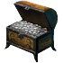

Платина
Предметы / Ресурсы
Открыть в интерактивной вики →
Описание
Премиальная валюта в игре. Можно получить за донат, во время ивентов, купив у других игроков, продав ценный предмет и т.д
Платина бывает двух видов. В сундуках по 10 и по 50 платины, которые можно передавать. А также та, которую вы используете, открыв сундук, перетянув его на своего персонажа, такую платину уже невозможно передать.
Платина бывает двух видов. В сундуках по 10 и по 50 платины, которые можно передавать. А также та, которую вы используете, открыв сундук, перетянув его на своего персонажа, такую платину уже невозможно передать.
Упоминается в
Цок-цок, Шлем Исследователя Подземелий, Шлем Охотника на Демонов, Шлем Истребителя Демонов, Шлем Имперского Агента, Шлем Следопыта Ложи, Шлем Уторского Мага, Шлем Черной Гвардии, Шлем Изумрудной Гвардии, Шлем Белой Гвардии, Шлем Представителя, Тайна, Золотой Шлем Следопыта Ложи, Малахитовый Шлем Следопыта Ложи, Бордовый Шлем Следопыта Ложи, Маска Чумного Доктора, Моровая Маска Чумного Доктора, Пандемическая Маска Чумного Доктора, Мерзкая Маска Чумного Доктора, Влечение, Вечность, Черная Скрытность, Шлем Карнавала в Ларкасе, Круэнтор, Праздничное Кабуто, Увлечение, Дворянская Братия, Сарматская Кровь, Золотая Свобода, Короновладный шишак, Гетманское забрало, Доспехи Таэрнийского Солдата, Доспехи Авантюриста, Доспехи Уторца, Броня Исследователя Подземелий, Доспехи Охотника на Демонов, Доспехи Истребителя Демонов, Доспехи Имперского Агента, Доспехи Следопыта Ложи, Доспех Уторского Мага, Доспехи Черной Гвардии, Доспехи Изумрудной Гвардии, Доспехи Белой Гвардии, Доспехи Представителя, Экстаз, Броня Изумрудной Ночи, Золотая Броня Следопыта Ложи, Малахитовая Броня Следопыта Ложи, Бордовая Броня Следопыта Ложи, Тулуп Баранища, Доспехи Бордовой Ночи, Доспехи Аметистовой Ночи, Доспехи Лазурной Ночи, Одеяние Чумного Доктора, Моровое Одеяние Чумного Доктора, Пандемическое Одеяние Чумного Доктора, Мерзкое Одеяние Чумного Доктора, Сердце Жизни, Преданность, Покров веков, Нагрудник Карнавала в Ларкасе, Клеймо, Броня Молчащего, Черная Ловкость, Тенеброс, Короновладная карацена, Гетманская карацена, Плащ Пушистой Ярости, Плащ Таэрнийского Солдата, Плащ Уторца, Плащ Исследователя Подземелий, Плащ Охотника на Демонов, Плащ Истребителя Демонов, Плащ Имперского Агента, Плащ Уторского Мага, Плащ Черной Гвардии, Плащ Изумрудной Гвардии, Плащ Белой Гвардии, Плащ Представителя, Плащ Чумного Доктора, Моровый Плащ Чумного Доктора, Пандемический Плащ Чумного Доктора, Мерзкий Плащ Чумного Доктора, Алая Мантия Мороза, Искушение, Плащ прошедших праздников, Цветущая Вуаль, Скорбь, Козий Кожух Колядника, Черный Блеск, Плащ Карнавала в Ларкасе, Таэрнийский горностай, Плащ Молчащего, Умбрелис, Короновладная епанча, Гетманская делия, Штаны Таэрнийского Солдата, Штаны Уторца, Штаны Исследователя Подземелий, Штаны Охотника на Демонов, Штаны Истребителя Демонов, Штаны Имперского Агента, Штаны Уторского Мага, Штаны Чёрной Гвардии, Штаны Изумрудной Гвардии, Штаны Белой Гвардии, Штаны Представителя, Дразнить, Штаны Изумрудной Ночи, Штаны Бордовой Ночи, Штаны Аметистовой Ночи, Штаны Лазурной Ночи, Штаны Следопыта Ложи, Золотые Штаны Следопыта Ложи, Малахитовые Штаны Следопыта Ложи, Бордовые Штаны Следопыта Ложи, Прыгуны Зайчителя, Штаны Чумного Доктора, Моровые Штаны Чумного Доктора, Пандемические Штаны Чумного Доктора, Мерзкие Штаны Чумного Доктора, Брюки Оттепели, Соблазны, Эха воспоминаний, Штаны Карнавала в Ларкасе, Штаны Молчащего, Черные Стремления, Ноктусы, Короновладные шоссы, Гетманские шаровары, Тапочки Зайчителя, Cапоги Имперского Агента, Cапоги Таэрнийского Солдата, Cапоги Уторца, Cапоги Исследователя Подземелий, Cапоги Охотника на Демонов, Cапоги Истребителя Демонов, Cапоги Следопыта Ложи, Сапоги Уторского Мага, Cапоги Черной Гвардии, Cапоги Изумрудной Гвардии, Cапоги Белой Гвардии, Cапоги Представителя, Свидания, Сапоги Изумрудной Ночи, Золотые Cапоги Следопыта Ложи, Малахитовые Cапоги Следопыта Ложи, Бордовые Cапоги Следопыта Ложи, Сапоги Чумного Доктора, Моровые Сапоги Чумного Доктора, Пандемические Сапоги Чумного Доктора, Мерзкие Сапоги Чумного Доктора, Подснежники, Следы предков, Сапоги Карнавала в Ларкасе, Ботинки Молчащего, Черные Тропы, Сангуэрисы, Короновладные пулены, Гетманские башмаки, Обморок, Посох Следопыта Ложи, Посох Чумного Доктора, Моровый Посох Чумного Доктора, Пандемический Посох Чумного Доктора, Мерзкий Посох Чумного Доктора, Рогатая Погибель, Зефирион, Золотой Коготь, Ловец Душ, Предвестник Смерти, Шепот Льда, Метка Вечности, Кровавый Палач, Честь Гусарии, Бердыш региментаря, Тоска, Кощей, Алаврис, Мелавир, Золотой Выстрел, Феарвен, Ночной Охотник, Королевский охотник, Братние души, Кулаки беса, Баселарды, Клинки Львиной Души, Призрачные Клинки, Когти Вечного Голода, Орлиные когти, Маленькая смерть, Меч Таэрнийского Солдата, Меч Черной Гвардии, Меч Изумрудной Гвардии, Меч Белой Гвардии, Меч Представителя, Кровавое Острие, Зазубренный меч, Холод, Змеиное лезвие, Инфернис, Казнь, Коготь Солнца, Кровавый Поцелуй, Лучистая карабела, Обещание, Солнечный Клинок, Герольд Рассвета, Рамдао, Острие Падших, Клинок Тьмы, Мор, Красная Жажда, Орлиный клинок, Орендис, Гульдарион, Сияние, Вор Крови, Сарматский рубатель, Душа Дракона, Пожиратель Гоблинов, Сапфирный Лабрис, Жнец Душ, Кровопийца, Королевская секира, Суверен, Ядро, Скипетр Рассвета, Знамение Проклятия, Гетманский кулак, Череполом, Ярость Природы, Осколок Звезды, Кровавый Пакт, Гусарский гром, Ротелла, Щит Черной Гвардии, Щит Изумрудной Гвардии, Щит Белой Гвардии, Щит Представителя, Щит Таэрнийского Солдата, Здравомыслие, Щит Новолуния, Щит полнолуния, Щит Рассвета, Оплот Тьмы, Шанец, Гиена, Кобра, Ягуар, Плокс, Бабочка, Скорпион, Феникс, Пантера, Папуг, Лохмач, Колотун, Дарклинг, Веточка, Барсук(физ), Барсук(маг), Назгулица(физ), Назгулица(маг), Бирюзовый ингибитор, Кварцевый ингибитор, Топазовый ингибитор, Корундовый ингибитор, Изумрудный ингибитор, Алмазный ингибитор, Андилунировый ингибитор, Платиновый ингибитор, Свиток телепортации - Трентис, Морф, Платиновый Ключ, Эликсир здоровья, Эликсир маны, Эликсир выносливости, Отвар здоровья, Отвар маны, Отвар выносливости, Концентрат здоровья, Концентрат маны, Концентрат выносливости, Экстракт здоровья, Экстракт маны, Экстракт выносливости, Рецепт Тона, Рецепт Сола, Рецепт Эры, Сброс навыков и характеристик, Эффект Опыта Альт, Премиальный Рынок, Рецепт приготовления Хохграта, Херевальд
Оплата за
Тон, Сол, Эра, Хохграт, Заключенный, Кобра, Ягуар, Плокс, Бабочка, Феникс, Пантера, Папуг, Колотун, Дарклинг, Веточка, Манька, Боевая Эра, Боевой Сол, Лесной Тон, Ржавая Летучая Мышь, Пятнистый Белый Огар, Карамельный Белый Огар, Пещерный Черный Огар, Угольно-черный Огар, Кровавый Дарклинг, Радужный Феникс, Тигровая Гиена, Первобытный Хохграт, Коричневый Ягуар, Нефритовая Кобра, Снежный Ворон, Лазурный Ворон, Бабочка Павлиний Глаз, Неизвестно, Изумрудная Бабочка, Тигровая Пантера, Благородный Попугай, Горный Плокс, Пустынный Плокс, Хищная Обезьяна, Ледяная Обезьяна, Токсичный Скорпион, Северный Колотун, Глянцевый Твиг, Луговая Манька